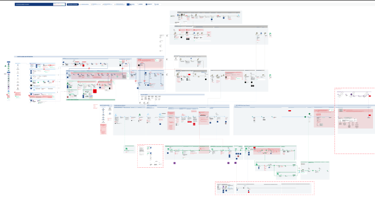
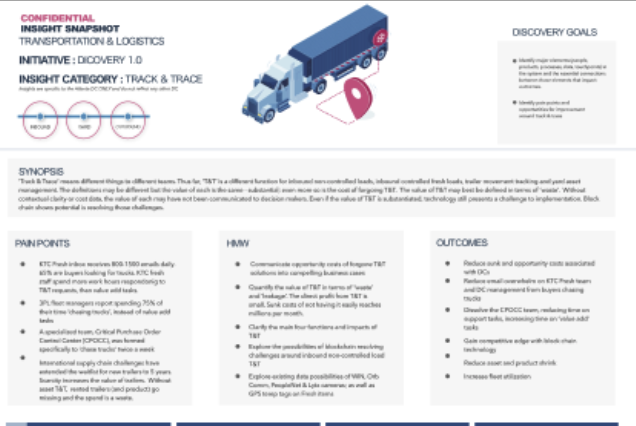

Connecting frontline user experience to backstage infrastructures.
caraabrown.com
Gigamap
Providing leadership with on the ground truth with clarity.

The Insight Snapshot
A digestable combination of research synthesis, problem identification and valuation, clarifying root causes and enabling action all on 1 page.
See moreService Blueprinting
4 levels of fidelity
Basic singular steps along a service journey, single row. Shows just the highest-level steps in a process — even if not truly linear, still indicates the general journey. The highest-level "river journey," with initial stops only.
Reinforces the first level of detail but with more clarity on smaller steps, still single row. Shows the river journey with initial stops and the smaller moments within those stops.
Reinforces the previous two levels at higher detail. Contains the basic anatomy of a service blueprint and speaks to initial pain points and interactivity — frontstage actors to backstage services — showing multiple rows to highlight multiple players in one area. Initial flows within stops, the players within those moments, and the pain points (problems to solve, opportunities) start to appear here.
Full complexity. Reinforces the previous three levels at the highest detail. Contains the full anatomy of a service blueprint — more flow-y, with single and multiple rows to show complexity. The river journey now carries deeper detail, speaking directly to complexities and pain points, with problems to solve and opportunities called out explicitly.